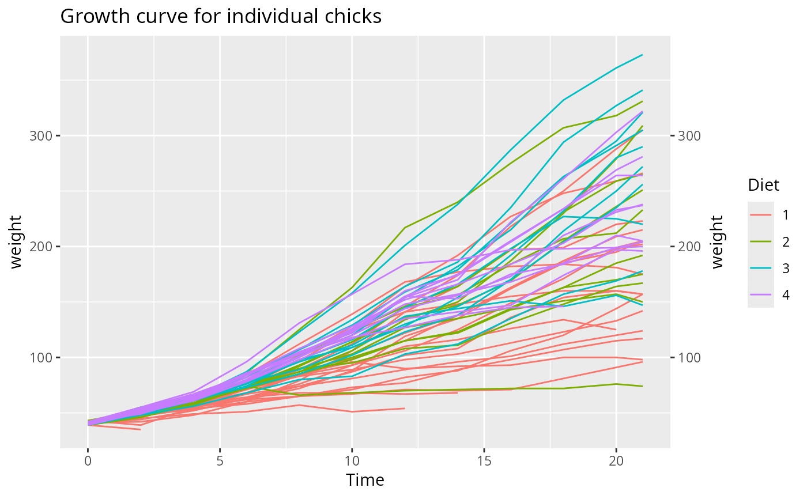

Takes two ggplot objects and renders p1 with the y axis
of p2 mirrored onto the right side. Useful when overlaying two
series with different scales or simply to frame the plot with matching
axes on both sides.
Usage
plot_duplicate_y_axis(p1, p2)
Arguments
- p1
A ggplot object. This plot is drawn with the duplicated right axis.
- p2
A ggplot object whose left y axis is mirrored to the right of
p1. Typically the same as p1.
Value
Invisibly returns NULL. The combined plot is drawn to the
current graphics device.
Examples
p1 <- ggplot(ChickWeight, aes(x = Time, y = weight, colour = Diet, group = Chick)) +
geom_line() +
ggtitle("Growth curve for individual chicks")
plot_duplicate_y_axis(p1 = p1, p2 = p1)
